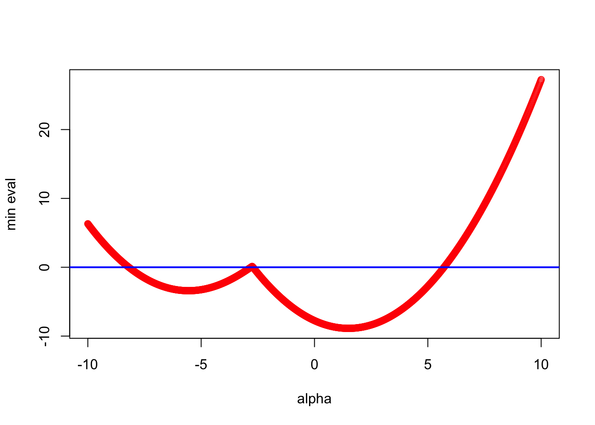
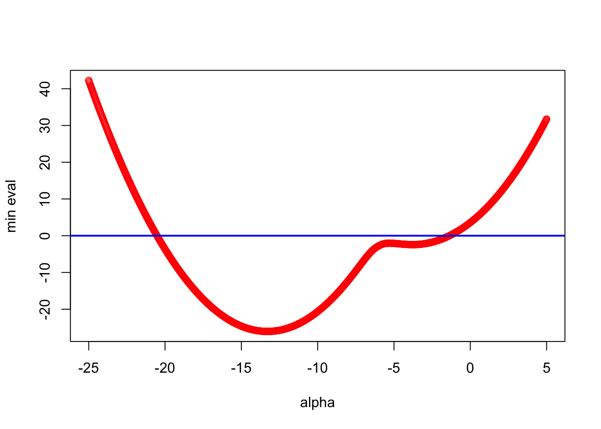
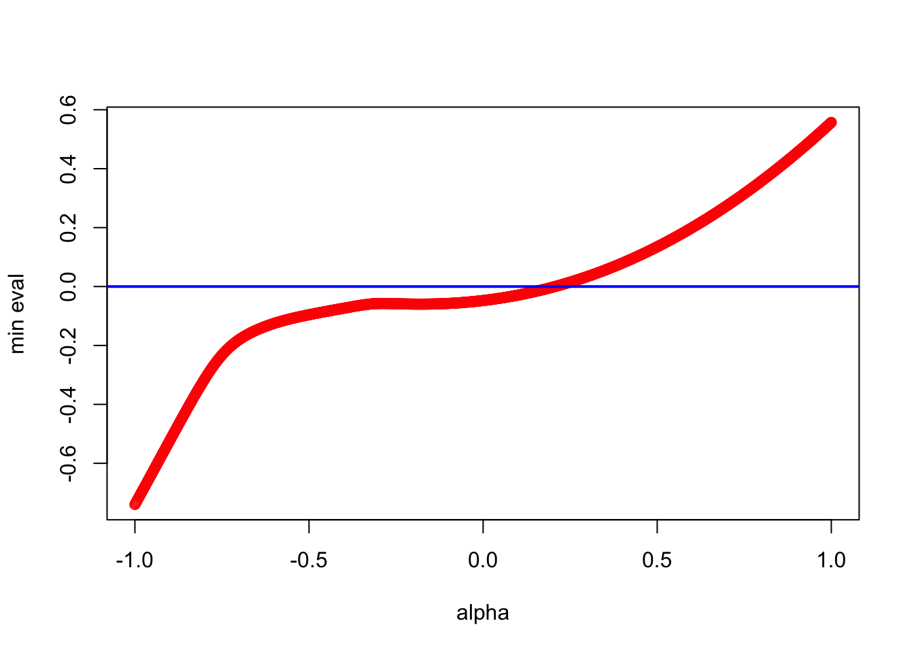
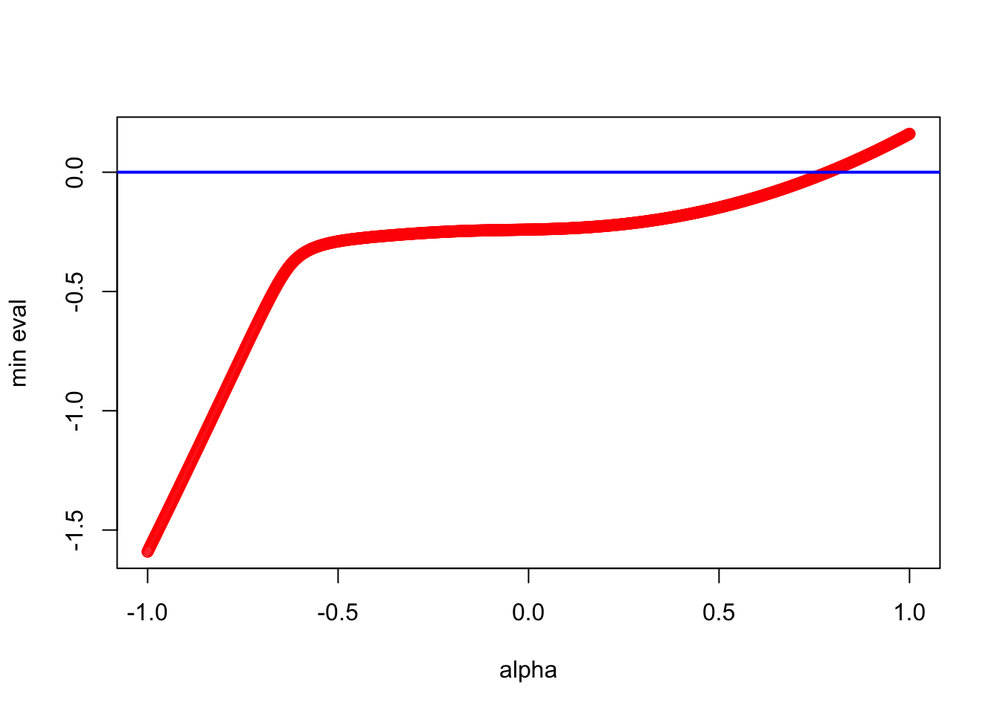
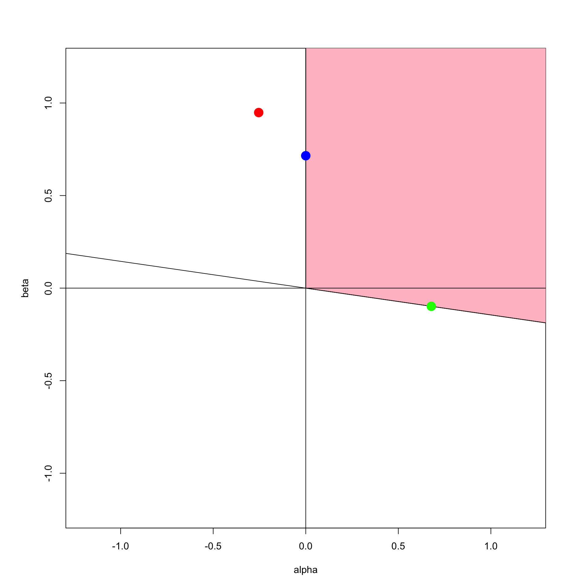
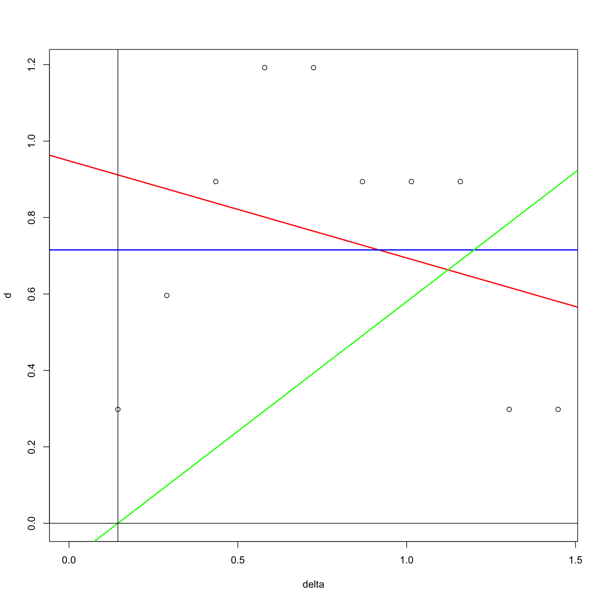

For all $\Delta$ there is an $\alpha_0\geq 0$ such that for all $\alpha\geq\alpha_0$ we have $\Delta+\alpha(E-I))$ Euclidean of dimension $r\leq n-1$.8 Interval MDS
intro: additive vs interval basic vs ratio
8.1 The Additive Constant
8.1.1 Early
In the early history of MDS dissimilarities were computed from comparative judgments in the Thurstonian tradition.
triads paired comparisons etc positive orthant
These early techniques only gave numbers on an interval scale, i.e. dissimilarities known only up to a linear transformation. In order to get positive dissimilarities a rational origin needed to be found in some way. This is the additive constant problem. It can be seen as the first example of nonmetric MDS, in which we have only partially known dissimilarities (up to an additive constant).
\[\begin{align} \begin{split} (\delta_{ij}+\alpha)&\approx d_{ij}(X),\\ \delta_{ij}&\approx d_{ij}(X)+\alpha. \end{split} (\#eq:twoadd) \end{align}\]
The additive constant techniques were more important in the fifties and sixties than they are these days, because they have largely been replaced by iterative nonmetric MDS techniques.
An early algorithm to fit the additive constant based on Schoenberg’s theorem was given by Messick and Abelson (1956). Ii was Torgerson based, i.e. it used the eigenvalues of \(\tau(\Delta^{(2)})\). It was a somewhat hopeful iterative technique, without a convergence proof, designed to make the sum of the \(n-p\) smallest eigenvalues equal to zero. This is of course only a necessary condition for best approximation, not a sufficient one.
In addition, the Messick-Abelson algorithm sometimes yielded solutionsin which the Torgerson transform of the squared dissimilarities had negative eigenvalues, which could even be quite large. That is also somewhat of a problem.
8.1.2 Cooper
Consequently Cooper (1972) proposed an alternative additive constant algorithm, taking his clue from the work of Kruskal.
The solution was to redefine stress as a function of both the configuration and the additive constant. Thus
\[\begin{equation} \sigma(X,\alpha):=\mathop{\sum\sum}_{1\leq j<i\leq n}w_{ij}(\delta_{ij}+\alpha-d_{ij}(X))^2, (\#eq:nmcooper1) \end{equation}\]
and we minimize this stress over both \(X\) and \(\alpha\).
Double phase (ALS)
\(\delta_{ij}+\alpha\geq 0\)
Single Phase (Cooper)
\[\begin{equation} \sigma(X):=\min_\alpha\mathop{\sum\sum}_{1\leq j<i\leq n}w_{ij}(\delta_{ij}+\alpha-d_{ij}(X))^2, (\#eq:nmcooper2) \end{equation}\]
8.2 Algebra
The additive constant problem is to find \(X\in\mathbb{R}^{n\times p}\) and \(\alpha\) such that \(\Delta+\alpha(E-I)\approx D(X)\). In this section we look for all \(\alpha\) such that \(\Delta+\alpha(E-I)\) is Euclidean, i.e. such that there is a configuration \(X\) with \(\Delta+\alpha(E-I)=D(X)\). This is a one-parameter generalization of Schoenberg’s theorem.
It makes sense to require \(\alpha\geq 0\), because a negative \(\alpha\) would more appropriately be called a subtractive constant. Also, we may want to make sure that the off-diagonal elements of \(\Delta+\alpha(E-I)\) are non-negative, i.e. that \(\alpha\geq-\delta_{ij}\) for all \(i>j\). Note that if we allow a negative \(\alpha\) then if all off-diagonal \(\delta_{ij}\) are equal, say to \(\delta>0\), we have the trivial solution \(\alpha=-\delta\) and \(X=0\).
8.2.1 Existence
We start with a simple construction.
Proof. We have, using \(\Delta\times(E-I)=\Delta\) and \((E-I)\times(E-I)=E-I\),
\[\begin{equation} \tau((\Delta+\alpha(E-I))\times(\Delta+\alpha(E-I)))= \tau(\Delta\times\Delta)+2\alpha\tau(\Delta)+\frac12\alpha^2J. (\#eq:tau1) \end{equation}\]
Thus each off-diagonal element is a concave quadratic in \(\alpha\), which is negative for \(\alpha\) big enough. Choose \(\alpha_0\geq 0\) to make all off-diagonal elements negative (and all dissimilarities non-negative). A doubly-centered matrix with all off-diagonal elements negative is positive semi-definite of rank \(n-1\) (Taussky (1949)).
Note that by the same argument we can also find a negative \(\alpha_0\) that makes all off-diagonal elements negative and thus \(\Delta+\alpha(E-I))\) is again Euclidean of dimension \(r\leq n-1\). But this \(\alpha_0\) will usually result in negative dissimilarities.
Theorem @ref(thm:nmn1) can be sharpened for non-Euclidean \(\Delta\). Define the following function of \(\alpha\):
\[\begin{equation} \lambda_\star(\alpha):=\min_{x'x=1, x'e=0}x'\{\tau(\Delta\times\Delta)+2\alpha\tau(\Delta)+\frac12\alpha^2J\}x. (\#eq:lambdas) \end{equation}\]
This is the smallest non-trivial eigenvalue of the Torgerson transform in @ref(eq:tau1). The matrix \(\Delta+\alpha(E-I)\) is Euclidean if and only if \(\lambda_\star(\alpha)\geq 0\). Note that \(\lambda_\star\) is continuous, by a simple special case of the Maximum Theorem (Berge (1963), Chapter VI, section 3), and coercive, i.e. \(\lambda_\star(\alpha)\rightarrow +\infty\) if \(|\alpha|\rightarrow +\infty\).
For all non-Euclidean $\Delta$ there is an $\alpha_1>0$ such that for all $\alpha\geq\alpha_1$ we have that $\Delta+\alpha(E-I))$ Euclidean of dimension $r\leq n-2$.Proof. Because \(\Delta\) is non-Euclidean we have \(\lambda_\star(0)<0\). By the construction in theorem @ref(thm:nmn1) there is an \(\alpha_0\) such that \(\lambda_\star(\alpha)>0\) for all \(\alpha>\alpha_0\). By the Maximum Theorem the function \(\lambda_\star\) is continuous, and thus, by Bolzano’s theorem, there is an \(\alpha_1\) between \(0\) and \(\alpha_0\) such that \(\lambda_\star(\alpha_1)=0\). If there is more than one zero between \(0\) and \(\alpha_0\) we take the largest one as \(\alpha_1\).
The problem with extending theorem @ref(thm:nmn2) to Euclidean \(\Delta\) is that the equation \(\lambda_\star(\alpha)=0\) may have only negative roots, or, even more seriously, no roots at all. This may not be too important from the practical point of view, because observed dissimilarities will usually not be exactly Euclidean. Nevertheless I feel compelled to address it.
If $\Delta$ is Euclidean then $\lambda_\star(\alpha)$ is non-negative and non-decreasing on $[0,+\infty)$.Proof. If \(\Delta\) is Euclidean, then \(\sqrt{\Delta}\), which is short for the matrix with the square roots of the dissimilarities, is Euclidean as well. This follows because the square root is a Schoenberg transform (Schoenberg (1937), Bavaud (2011)), and it implies that \(\tau(\Delta)=\tau(\sqrt{\Delta}\times\sqrt{\Delta})\) is positive semi-definite. Thus the matrix @ref(eq:tau1) is positive semi-definite for all \(\alpha\geq 0\). By Danskin’s Theorem the one-sided directional derivative of \(\lambda_\star\) at \(\alpha\) is \(2x(\alpha)'\tau(\Delta)x(\alpha)+\alpha\), where \(x(\alpha)\) is one of the minimizing eigenvectors. Because the one-sided derivative is non-negative, the function is non-decreasing (in fact increasing if \(\alpha>0\)).
Of course \(\lambda_\star(\alpha)=0\) can still have negative solutions, and in particular it will have at least one negative solution if \(\lambda_\star(\alpha)\leq 0\) for any \(\alpha\). There can even be negative solutions with \(\Delta+\alpha(E-I)\) non-negative.
8.2.2 Solution
The solutions of \(\lambda_\star(\alpha)=0\) can be computed and studied in more detail, using results first presented in the psychometric literature by Cailliez (1983). We reproduce his analysis here, with a somewhat different discussion that relies more on existing mathematical results.
In order to find the smallest \(\alpha\) we solve the quadratic eigenvalue problem (Tisseur and Meerbergen (2001)). WHY ??
\[\begin{equation} \{\tau(\Delta\times\Delta)+2\alpha\tau(\Delta)+\frac12\alpha^2J\}y=0. (\#eq:qep1) \end{equation}\]
A solution \((y,\alpha)\) of #ref(eq:qep1) is an eigen pair, in which \(y\) is an eigenvector, and \(\alpha\) the corresponding eigenvalue. The trivial solution \(y=e\) satisfies #ref(eq:qep1) for any \(\alpha\). We are not really interested in the non-trivial eigenvectors here, but we will look at the relationship between the eigenvalues and the solutions of \(\lambda_\star(\alpha)=0\).
The eigenvalues can be complex, in which case they do not interest us. If \(\alpha\) is a non-trivial real eigenvalue, then the rank of the Torgerson transform of the matrix in #ref(eq:qep1) is \(n-2\), but
To get rid of the annoying trivial solution \(y=e\) we use a square orthonormal matrix whose first column is proportional to \(e\). Suppose \(L\) contains the remaining \(n-1\) columns. Now solve
\[\begin{equation} \{L'\tau(\Delta\times\Delta)L+2\alpha L'\tau(\Delta)L+\frac12\alpha^2I\}y=0. (\#eq:qep2) \end{equation}\]
Note that the determinant of the polynomial matrix in @ref(eq:qep2) is a polynomial of degree \(2(n-1)\) in \(\alpha\), which has \(2(n-1)\) real or complex roots.
The next step is linearization (Gohberg, Lancaster, and Rodman (2009), chapter 1), which means finding a linear or generalized linear eigen problem with the same roots as @ref(eq:qep2). In our case this is the eigenvalue problem for the matrix
\[\begin{equation} \begin{bmatrix} \hfill 0&\hfill I\\ -2L'\tau(\Delta\times\Delta)L&-4L'\tau(\Delta)L \end{bmatrix} (\#eq:qep3) \end{equation}\]
8.2.3 Examples
8.2.3.1 Small Example
Here is a small artificial dissimilarity matrix.
1 2 3 4
1 +0 +1 +2 +5
2 +1 +0 +4 +2
3 +2 +4 +0 +1
4 +5 +2 +1 +0It is constructed such that \(\delta_{14}>\delta_{12}+\delta_{24}\) and that \(\delta_{23}>\delta_{21}+\delta_{13}\). Because the triangle inequality is violated the dissimilarities are not distances in any metric space, and certainly not in a Euclidean one. Because the minimum dissimilarity is \(+1\), we require that the additive constant \(\alpha\) is at least \(-1\).
The R function treq() in appendix @ref(apcodeclass) finds the smallest additive constant such that all triangle inequalities are satisfied. For this example it is \(\alpha=2\).
The Torgerson transform of \(\Delta\times\Delta\) is
1 2 3 4
1 +4.312 +2.688 +1.188 -8.188
2 +2.688 +2.062 -5.938 +1.188
3 +1.188 -5.938 +2.062 +2.688
4 -8.188 +1.188 +2.688 +4.312with eigenvalues
[1] +12.954 +7.546 +0.000 -7.750 The smallest eigenvalue -7.75 is appropriately negative, and theorem @ref(thm:nmn2) shows that \(\Delta\times\Delta+7.75(E-I)\) are squared distances between four points in the plane.
The upper bound for the smallest \(\alpha\) from theorem @ref(thm:nmn1), computed by the R function acbound(), is 9.309475.
It is useful to look at a graphical representation of the minimum non-trivial eigenvalue of \(\tau((\Delta+\alpha(E-I))\times(\Delta+\alpha(E-I)))\) as a function of \(\alpha\). The R function aceval() generates the data for the plot.

We see that the minimum non-trivial eigenvalue is a continuous function of \(\alpha\),but one which certainly is not convex or concave or differentiable. The graph crosses the horizontal axes near -8, -3, and +6.
To make this precise we apply the theory of section xxx. The R function acqep() finds the six non-trivial eigenvalues
[1] -8.192582+0.000000i 5.713075+0.000000i -3.500000+2.179449i
[4] -3.500000-2.179449i -2.807418+0.000000i -2.713075+0.000000iTwo of the eigenvalues are complex conjugates, four are real. Of the real eigenvalues three are negative, and only one is positive, equal to +5.713. The table above gives the eigenvalues of the Torgerson transform, using all four real eigenvalues for \(\alpha\). The three negative ones do result in a positive semi-definite matrix with rank equal to \(n-2\), but they also create negative dissimilarities.
-8.193 ****** +38.098 +13.885 +0.000 +0.000
+5.713 ****** +61.116 +43.441 +0.000 -0.000
-2.807 ****** +3.115 +0.402 +0.000 -0.000
-2.713 ****** +3.228 +0.215 +0.000 -0.000 8.2.3.2 De Gruijter Example

[1] -20.527411+0.0000000i -10.174103+0.0000000i -9.472504+0.0000000i
[4] -6.622263+0.3526193i -6.622263-0.3526193i -5.885691+0.2875441i
[7] -5.885691-0.2875441i -5.640580+0.3668888i -5.640580-0.3668888i
[10] -4.391289+0.2532477i -4.391289-0.2532477i -3.708911+0.3868444i
[13] -3.708911-0.3868444i -3.238930+0.0000000i -2.311379+0.0000000i
[16] -1.369315+0.0000000i8.2.3.3 Ekman Example

[1] -5.713009655+0.00000000i -3.782729083+0.00000000i -1.791313475+0.00000000i
[4] -1.628964140+0.00000000i -0.976213035+0.00000000i -0.744289350+0.04959388i
[7] -0.744289350-0.04959388i -0.682321433+0.00000000i -0.534849034+0.00000000i
[10] -0.513033529+0.00000000i -0.497908376+0.02481447i -0.497908376-0.02481447i
[13] -0.372321687+0.13138923i -0.372321687-0.13138923i -0.388308013+0.00000000i
[16] -0.229813135+0.18259852i -0.229813135-0.18259852i -0.286712033+0.00000000i
[19] -0.212601059+0.11851989i -0.212601059-0.11851989i 0.206312577+0.00000000i
[22] -0.194299448+0.00000000i 0.132767430+0.00000000i -0.079646956+0.00000000i
[25] -0.024193535+0.00000000i -0.006762279+0.00000000i
[1] -7.974065161+0.00000000i -4.867929358+0.00000000i -1.224234244+0.00000000i
[4] -0.982237601+0.00000000i 0.785644808+0.00000000i 0.648677529+0.00000000i
[7] -0.554033177+0.00000000i -0.542600618+0.01297027i -0.542600618-0.01297027i
[10] 0.486418243+0.00000000i -0.111892110+0.39235860i -0.111892110-0.39235860i
[13] 0.382974612+0.00000000i 0.353089664+0.00000000i -0.351610318+0.00000000i
[16] -0.307360690+0.00000000i -0.126594060+0.26307892i -0.126594060-0.26307892i
[19] -0.073544792+0.26986305i -0.073544792-0.26986305i -0.233302697+0.00000000i
[22] -0.008137562+0.19480062i -0.008137562-0.19480062i -0.138025415+0.11750706i
[25] -0.138025415-0.11750706i 0.120502647+0.00000000i8.2.4 A Variation
Alternatively, we could define our approximation problem as finding \(X\in\mathbb{R}^{n\times p}\) and \(\alpha\) such that \(\sqrt{\delta_{ij}^2+\alpha}\approx d_{ij}(X)\), or, equivalently, \(\Delta\times\Delta+\alpha(E-I)\approx D(X)\times D(X)\).
For any $X\in\mathbb{R}^{n\times p}$ with $p=n-2$ there is an $\alpha$
such that $\sqrt{\delta_{ij}^2+\alpha}= d_{ij}(X)$.Proof. Now we have
\[\begin{equation} \tau(\Delta\times\Delta+\alpha(E-I)))= \tau(\Delta\times\Delta)+\frac12\alpha J. (\#eq:tau2) \end{equation}\]
The eigenvalues of \(\tau(\Delta\times\Delta)+\frac12\alpha J\) are zero and \(\lambda_s+\frac12\alpha\), where the \(\lambda_s\) are the \(n-1\) non-trivial eigenvalues of \(\tau(\Delta\times\Delta)\). If \(\underline{\lambda}\) is smallest eigenvalue we choose \(\alpha=-2\underline{\lambda}\), and \(\tau(\Delta\times\Delta)+\frac12\alpha J\) is positive semi-definite of rank \(r\leq n-2\).
Note that theorem @ref(thm:nmn2) implies that for any \(\Delta\) there is a strictly increasing differentiable transformation to the space of Euclidean distance matrices in \(n-2\) dimensions. This is a version of what is sometimes described as Guttman’s n-2 theorem (Lingoes (1971)). The proof we have given is that from De Leeuw (1970), Appendix B.
8.3 Interval smacof
In this section we introduce a double-phase alternating least squares algorithm that fits better into the smacof framework than the single-phase method proposed by Cooper (1972). We also restrict our linear transformations to be to be increasing and non-negative on the positive real axes.
To avoid various kinds of trivialities, assume not all \(d_{ij}(X)\) are zero.
In the optimal scaling phase we must minimize
\[\begin{equation} \sigma(X,\alpha,\beta)=\mathop{\sum\sum}_{1\leq i<j\leq n}w_{ij}(\alpha\delta_{ij}+\beta-d_{ij}(X))^2 (\#eq:intloss) \end{equation}\]
The constraints are \(\alpha\delta_{ij}+\beta\geq 0\) and \(\alpha\delta_{ij}+\beta\geq\alpha\delta_{kl}+\beta\) if \(\delta_{ij}\geq\delta_{kl}\). These define pointed convex cone in the space of disparities. We need to project \(D(X)\) on that cone, in the metric defined by \(W\). But it is easy to see that and equivalent set of constraints in \(\mathbb{R}^2\) is \(\alpha\geq 0\) and \(\alpha\delta_\text{min}+\beta\geq 0\). Again these two constraints define a pointed cone in two-dimensional \((\alpha,\beta)\) space, where proje ction is much easier to handle thanin the generally much larger disparity space. Of course the projection metric in \((\alpha,\beta)\) is different from the one in disparity space.
In addition to the inequality constraints we have the normalization constraint \[\begin{equation} \mathop{\sum\sum}_{1\leq i<j\leq n}w_{ij}(\alpha\delta_{ij}+\beta)^2=1, (\#eq:intnorm) \end{equation}\] but as we have seen in chapter @ref(nonmtrmds) we can initially ignore that constraint, project on the cone, and then normalize the projection.
In order to simplify the notation we collect the \(d_{ij}(X)\) in a vector \(d\), the \(\delta_{ij}\) in a vector \(\delta\) and the \(w_{ij}\) in a diagonal matrix \(W\).
Let’s first get the trivial case where all \(\delta_{ij}\) are equal out of the way. In that case the linear regression is singular, and we simply choose all \(\alpha\delta+\beta\) equal to the constant \(e'Wd\), for example by setting \(\alpha=0\) and \(\beta=e'Wd\). Applying the normalization condition @ref(eq:intnorm) then sets \(\beta=1\). From now on we assume in this section that not all \(\delta_{ij}\) are equal.
Projecting on the cone gives us four possibilities. We can have \(\alpha=0\) or \(\alpha\delta_\text{min}+\beta=0\), or both, or neither. We first analyze the case in which the unconstrained minimum of @ref(eq:intloss) is in the cone, which will be the most common case, especially in later smacof iterations. Using the fact that \(\delta'W\delta=e'We=1\) we find that \[\begin{equation} \begin{bmatrix}\tilde\alpha\\\tilde\beta\end{bmatrix}= \frac{1}{1-(e'W\delta)^2}\begin{bmatrix}\delta'(W-We e'W)d\\e'(W-W\delta\delta'W)d\end{bmatrix}. (\#eq:intunc) \end{equation}\] If \(\tilde\alpha\geq 0\) and \(\tilde\beta\geq-\alpha\delta_\text{min}\) we are done. If not, we know the projection is on the line \(\alpha=0\) or on the line \(\tilde\beta=-\alpha\delta_\text{min}\), or on their intersection, which is the origin.
First suppose the projection is on \(\alpha=0\). We find the minimizing \(\beta\) equal to \(\overline{\beta}:=e'Wd\), which strictly satisfies the second constraint because \(\overline\beta>-\alpha\delta_\text{min}=0\), and thus \((0,e'Wd)\) is on the boundary of the cone. This also show that the origin, which has \(\sigma(X,0,0)=d'Wd\), can never be the projection. The minimum at \((0,e'Wd)\) is \[\begin{equation} \sigma(X,0,e'Wd)=d'Wd-(d'We)^2 (\#eq:intvertexloss1) \end{equation}\] Or, alternatively, we can assume that the projection is on the vertex \(\beta=-\alpha\delta_\text{min}\), in which case the minimizing \(\alpha\) is \[\begin{equation} \overline{\alpha}:=\frac{(\delta-\delta_\text{min})'Wd}{(\delta-\delta_\text{min})'W(\delta-\delta_\text{min})}, (\#eq:intalpha) \end{equation}\] which is always positive, and thus \((\overline{\alpha},-\overline{\alpha}\delta_\text{min})\) is on the boundary of the cone. The minimum is \[\begin{equation} \sigma(X,\overline{\alpha},-\overline{\alpha}\delta_\text{min})=d'Wd-\frac{((\delta-\delta_\text{min})'Wd)^2}{(\delta-\delta_\text{min})'W(\delta-\delta_\text{min})} (\#eq:intvertexloss2) \end{equation}\] If the unconstrained solution is not in the cone, then we choose the projection as the solution corresponding with the smallest of @ref(eq:intvertexloss1) and (@ref(eq:intvertexloss2).
8.3.1 Example
We illustrate finding the optimal linear transformation with a small example. We choose some arbitrary \(w\), \(\delta\), and \(d\) and normalize them in the usual way.
w <- c(rep(1,5),rep(2,5))
w <- w / sum(w)
delta <- 1:10
s <- sum(w * delta ^ 2)
delta <- delta / sqrt (s)
d <- c(1, 2, 3, 4, 4, 3, 3, 3, 1, 1)
s <- sum (w * d ^ 2)
t <- sum (w * d * delta)
d <- d * (t / s)After normalization the \(\delta_{\text{min}}\) is 0.1448414. The pink region in figure @ref(fig:intconex) is the cone formed by the intersection of the half-spaces \(\alpha\geq 0\) and \(\alpha\delta_{\text{min}}+\beta\geq 0\).

The unconstrained minimum is attained at -0.2541855, 0.9484652, the red point in figure @ref(fig:intconex), with stress equal to 0.0939827. That is clearly outside the cone, so we now consider projection on the two one-dimensional boundary rays. The blue point is 0, 0.7152935, the projection on \(\alpha\geq 0\). It is fairly close to the unconstrained minimum, with stress 0.1042239. The green point 0.6782764, -0.0982425is the projection on \(\beta=-\alpha\delta_{\text{min}}\), which has stress 0.2684117. Thus the blue point 0, 0.7152935is the actual projection on the cone in \((\alpha,\beta)\) space, and the best fitting line has slope zero (which, in smacof, would make all disparities equal for the next iteration).
This is illustrated in a different way (with Shepard plots) in figure @ref(fig:intlineex), where we see the red, blue, and green lines corresponding with the red, blue, and green points in figure @ref(fig:intconex). Note that the green line goes through the point \((\delta_{\text{min}},0)\). The horizontal blue line is the best fitting one under the constraints.
